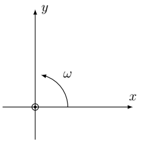

W26 (2026) — English translation
Most physical systems are not conservative due to the presence of dissipative forces. An example of such forces is friction. In this problem we will consider examples of such systems with the simplest case of viscous friction.
Let a particle of mass $m$ move in a stationary medium in which it is acted upon by a viscous friction force $\vec{F}_\text{тр} = -\varepsilon m \vec{v}$, where $\vec v$ is the particle velocity. The free fall acceleration is $\vec g$, initially the particle was at the origin and had a speed of $\vec v_0$.
Let us now consider the motion of a particle in the absence of gravity, but now it is acted upon by a constant modulus rotating force $F_x = F_0 \cos(\omega t)$, $F_y = F_0 \sin(\omega t)$.
A particle of mass $m$ is in a medium rotating with an angular velocity $\omega$ around a vertical axis $z$, the acceleration of gravity is $\vec g = -g\vec e_z$, the friction force is $\vec{F} = -\varepsilon m \vec v_\text{отн}$, where $\vec v_\text{отн}$ is the velocity of the particle relative to the medium. At the initial moment, the particle is motionless and located at the point with coordinates $(x_0,y_0,z_0) = (r_0,0,0)$.

It is known that the equations you obtained have a solution of the form $$ \left(x(t),y(t)\right)=\left(A e^{at} \cos(\Omega t + \varphi_0), A e^{at} \sin(\Omega t+ \varphi_0)\right). $$Эти функции являются решениями при произвольных значениях $\varphi_0$, в частности при $\varphi_0 = 0$ и $\varphi_0 = \pi/2$ получим $$\left(x_1(t),y_1(t)\right)=\left(A e^{at} \cos(\Omega t), A e^{at} \sin(\Omega t)\right),$$ $$\left(x_2(t),y_2(t)\right)=\left(-A e^{at} \sin(\Omega t), A e^{at} \cos(\Omega t)\right).$$ При этом существует две пары возможных значений параметров $(a, \Omega)$.
In what follows we will use the notation $$A\vec{r}_{1i}=\left(Ae^{a_it} \cos(\Omega_i t), A e^{a_it} \sin(\Omega_i t)\right), \;A\vec{r}_{2i}=\left(-Ae^{a_it} \sin(\Omega_i t), A e^{a_it} \cos(\Omega_i t)\right).$$ Здесь индекс $i$ может принимать два значения $1, 2$, отвечающие двум возможным значениям $(a, \Omega)$.
Source: https://pho.rs/p/4672